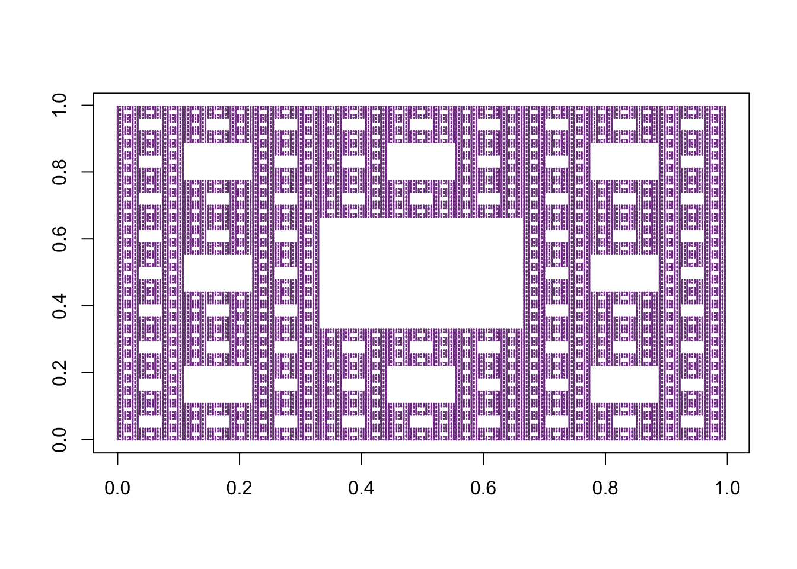

IFSbmp is a package built to facilitate drawing IFS (iterated function system) type fractals. An IFS fractal is made up of the combination of several copies of itself, each copy being transformed by a function. The functions are contractive, which means they bring points closer together and make shapes smaller. Hence, the shape of an IFS fractal is made up of several possibly-overlapping smaller copies of itself, each of which is also made up of copies of itself, ad infinitum. This is the source of its self-similar fractal nature.1
This package is not available on CRAN at the moment. The way to obtain IFSbmp is to install it by typing the following command in R console:
install_github(".../IFSbmp")IFSbmp allows plotting fractals with the IFS method. It contains a function that converts a series of functions into IFS class list object and a plot function for objects with this class attribute.
IFSbmp contains two main functions.
plot.IFS()First we need to define the functions we will use for this fractal:
tr1 <- function(x,y){
c(1/2*x+0*y+0,0*x+1/2*y+0)
}
tr2 <- function(x,y){
c(1/2*x+0*y+1/2,0*x+1/2*y+0)
}
tr3 <- function(x,y){
c(1/2*x+0*y+1/4,0*x+1/2*y+sqrt(3)/4)
}All these functions use the same formula of an affinic function (a,b,c,d,e,f) -> c(ax+by+c,dx+ey+f), so for convenience we can add a function lin() that can be used to create such function. It is based on six coefficients. This is a type of function that can be used for some other fractals as well.
lin <- function(a,b,c,d,e,f){function(x,y) {c(a*x+b*y+c,d*x+e*y+f)}}
tr1 <- lin(1/2,0,0,0,1/2,0)
tr2 <- lin(1/2,0,1/2,0,1/2,0)
tr3 <- lin(1/2,0,1/4,0,1/2,sqrt(3)/4)Next, these functions can be used to create a list of class IFS:
createIFS(tr1, tr2, tr3)Finally, using the function our IFS object can be used to plot the fractal:
plot(createIFS(tr1, tr2, tr3),depth=8,cex=.1,xlab="",ylab="")Sierpinski triangle
lin <- function(a,b,c,d,e,f){function(x,y) {c(a*x+b*y+c,d*x+e*y+f)}}
plot(createIFS(lin(0,0,0,0,0.16,0),
lin(0.85,0.04,0,-0.04,0.85,1.6),
lin(0.2,-0.26,0,0.23,0.22,1.6),
lin(-0.15,0.28,0,0.26,0.24,0.44)),
xlab="",
ylab="",
depth=11,
type="p",
cex=.3,
col="darkcyan")Barnsley fern - 11 iterations
We can manipulate the depth of iterations and the size of the points to fill the in-between spaces in our fractal.
The following is an example of less iterations with bigger point size.
lin <- function(a,b,c,d,e,f){function(x,y) {c(a*x+b*y+c,d*x+e*y+f)}}
plot(createIFS(lin(.5,-.5,0,.5,.5,0),
lin(-.5,-.5,1,.5,-.5,0)),
xlab="",
ylab="",
depth=13,
type="p",
cex=.5,
col="navy")The following is an example of more iterations with smaller point size.
lin <- function(a,b,c,d,e,f){function(x,y) {c(a*x+b*y+c,d*x+e*y+f)}}
plot(createIFS(lin(.5,-.5,0,.5,.5,0),
lin(-.5,-.5,1,.5,-.5,0)),
xlab="",
ylab="",
depth=16,
type="p",
cex=.05,
col="darkmagenta")lin3 <- function(a,b) {lin(1/3,0,a/3,0,1/3,b/3)}
plot(createIFS(lin3(0,0),
lin3(0,1),
lin3(0,2),
lin3(1,0),
lin3(1,2),
lin3(2,0),
lin3(2,1),
lin3(2,2)),
xlab="",
ylab="",
type="p",
depth = 5,
cex=0.1,
col="mediumorchid4")
lin3 <- function(a,b) {lin(1/3,0,a/3,0,1/3,b/3)}
plot(createIFS(lin3(0,1),
lin3(1,0),
lin3(1,1),
lin3(1,2),
lin3(2,1)),
xlab="",
ylab="",
type="p",
depth = 6,
cex=0.1,
col="cadetblue")Michael F. Barnsley:
“Fractal geometry will make you see everything differently. There is a danger in reading further. You risk the loss of your childhood vision of clouds, forests, flowers, galaxies, leaves, feathers, rocks, mountains, torrents of water, carpet, bricks, and much else besides. Never again will your interpretation of these things be quite the same.” (Fractals Everywhere, 2000)
Wikipedia Iterated function system↩